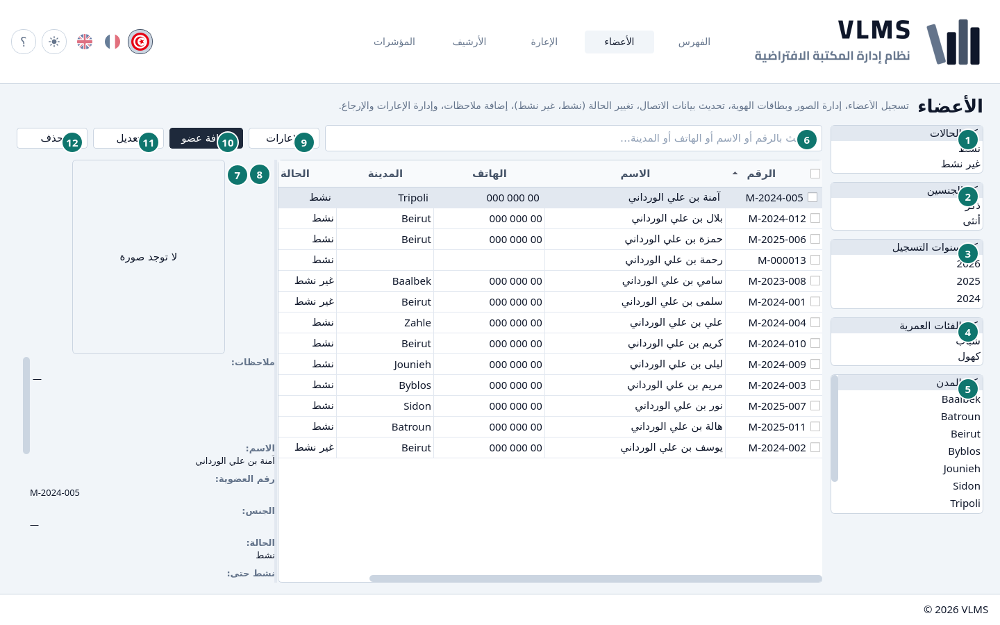
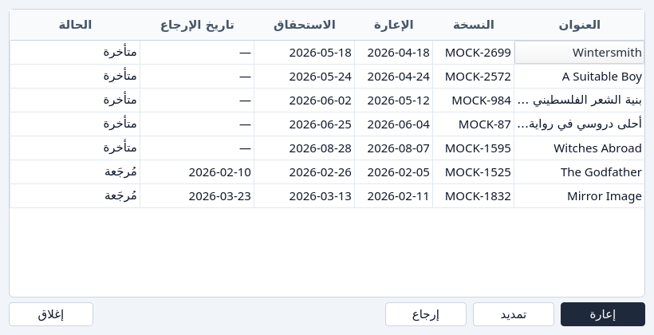

الأعضاء
من يجوز له الاستعارة، وإلى أي يوم.
الأعضاء هم المسجَّلون الذين ما زالوا في الخدمة. الحالة وآخر يوم نشاط يقولان إن كان الشخص يستطيع الاستعارة اليوم.


- الحالة، تبدأ بـكل الحالات: نشط أو غير نشط أو الاثنان. انظر حالة العضو.
- الجنس، تبدأ بـكلا الجنسين.
- سنة التسجيل، تبدأ بـكل سنوات التسجيل.
- الفئة العمرية، تبدأ بـكل الفئات العمرية: شباب أو كهول.
- المدينة، تبدأ بـكل المدن.
- البحث.
- الإعارات — كل إعارة لهذا العضو، بما فيها الإعارات المؤرشفة.
- التفاصيل.
- الإعارات
- إضافة عضو
- تعديل
- حذف
قوائم المرشّحات بلا عناوين. السطر الأول في كل منها، كل الحالات أو كلا الجنسين أو كل سنوات التسجيل أو كل الفئات العمرية أو كل المدن، يقول ما ترشّحه. اختر سطراً أو أكثر تحت ذلك السطر لتضييق القائمة. المرشّحات تجتمع.
الإعارة والأرشيف يستعملان هذه القوائم لترشيح الإعارات حسب العضو، والسنة فيهما سنة الإعارة.
البحث يتبع الاسم ورقم العضوية والهاتف والمدينة والمهنة.
التفاصيل
اللوحة تعرض الحالة وآخر يوم نشاط، والصورة إن وُجدت. صورة الهوية هناك أيضاً إذا سُجّلت.

انظر حالة العضو.
الإعارات
الإعارات تفتح سجل هذا العضو، بما فيه الإعارات التي أُرشفت. تفتح حتى إذا لم يستعر العضو قط، وإعارة موجودة للعضو النشط.


الحذف
حذف يؤرشف العضو. يُرفض ما دامت إعارة له ما زالت خارجة. الرسالة تعرض الذهاب إلى الإعارة، فتفتح الإعارة ورقم العضوية معبّأ، حتى ترجع النسخة أولاً.

أجب بـموافق للبقاء هنا. التسجيل والتجديد هما تسجيل عضو. بقية الإزالة هي الإزالة.